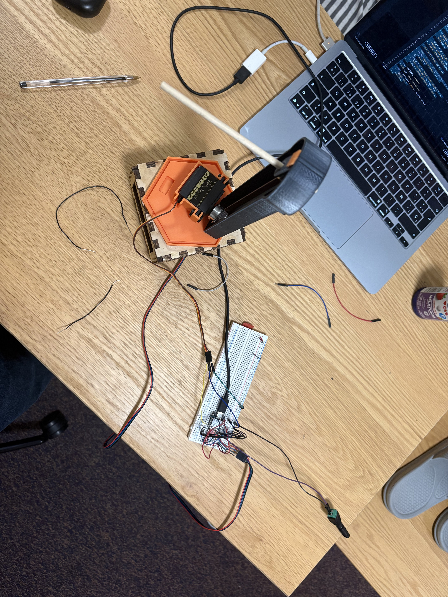

The MVP consists of two programs working together: an Arduino sketch that controls the stepper motor and servo to set rotation and pitch angles, and a desktop C++ program that calculates the optimal launch angle using projectile motion simulation with drag.

#include <AccelStepper.h>
#include <ESP32Servo.h>
#include <Arduino.h>
#include <cmath>
const int stepPin = D7;
const int dirPin = D1;
float angle = 0.0;
int fangle = 0;
long homePosition = 0;
AccelStepper stepper(1, stepPin, dirPin);
const int servoPin = D6;
Servo pitchServo;
float pitchAngle = 0.0;
void setup() {
Serial.begin(9600);
delay(200);
homePosition = stepper.currentPosition();
stepper.setMaxSpeed(100);
stepper.setAcceleration(50);
pitchServo.attach(servoPin);
// Wait for the rotation angle from the PC, sent as "ROTATION:270.0\n"
while (Serial.available() == 0) {
yield();
}
String rotLine = Serial.readStringUntil('\n');
if (rotLine.startsWith("ROTATION:")) {
angle = rotLine.substring(9).toFloat();
}
fangle = round((200.0 * angle / 360.0));
stepper.moveTo(fangle);
while (stepper.distanceToGo() != 0) {
stepper.run();
yield();
}
delay(5000);
// Wait for the pitch angle from the PC, sent as "PITCH:37.5\n"
while (Serial.available() == 0) {
yield();
}
String pitchLine = Serial.readStringUntil('\n');
if (pitchLine.startsWith("PITCH:")) {
pitchAngle = pitchLine.substring(6).toFloat();
pitchAngle = constrain(pitchAngle, 0, 180);
pitchServo.write(pitchAngle);
}
}
void loop() {
stepper.moveTo(fangle);
while (stepper.distanceToGo() != 0) {
stepper.run();
yield();
}
delay(1000);
stepper.moveTo(homePosition);
while (stepper.distanceToGo() != 0) {
stepper.run();
yield();
}
delay(1000);
}AI was used to create templates for the code and debugging, but not for any direct coding.
// ============================================================
// PROJECTILE MOTION + DRAG -> OPTIMAL LAUNCH ANGLE -> ESP32
// ============================================================
// ROADMAP ONLY — no algorithm logic implemented yet.
// This file lays out the sections, variables, and function
// stubs you need to fill in. Work top to bottom.
//
// PROGRAM TYPE: this runs as a desktop/host C++ program
// (has int main()), NOT as an Arduino .ino. It computes the
// optimal angle, then talks to the ESP32 over a USB/UART
// serial connection. The ESP32 side needs its own sketch that
// reads the same serial data (separate .ino file).
// ============================================================
//
// SUGGESTED BUILD ORDER (don't go top-to-bottom by section number,
// build in dependency order instead):
// 1. Section 2 - fill in real pellet numbers
// 2. Section 1 - sanity-check constants
// 3. Section 8 - implement computeDragForce
// 4. Section 8 - write a new "slope function": takes
// [x,y,vx,vy], returns [vx,vy,ax,ay] using
// computeDragForce + gravity
// 5. Section 5 - pick Euler or RK4, use the slope function
// inside the step loop
// 6. Section 8 - finish simulateTrajectory using that loop
// 7. Section 3 - decide how inputs are set (hardcode first,
// add cin/sensor later)
// 8. Section 9 - main(): call simulateTrajectory once with a
// guessed angle, print the result, sanity check
// 9. Section 6 - implement findOptimalAngle using simulateTrajectory
// 10. Section 9 - main(): call findOptimalAngle, print bestAngle
// 11. Section 7 - pick serial port/baud/message format
// 12. Section 8 - implement the three serial functions
// 13. Section 9 - main(): wire in the serial calls
// 14. Separate ESP32 .ino - write the receiver sketch to match
// ============================================================
#include <cmath>
#include <iostream>
#include <termios.h>
#include <numbers>
#include <fcntl.h> // for open()
#include <unistd.h> // for write(), close(), sleep()
#include <string>
#include <cerrno> // for errno
#include <cstring> // for strerror()
float pi = std::numbers::pi;
// ------------------------------------------------------------
// SECTION 1: PHYSICAL / ENVIRONMENT CONSTANTS
// ------------------------------------------------------------
// Everything the drag equation needs that does NOT change
// between shots.
const float GRAVITY = -9.8f; // m/s^2
const float AIR_DENSITY = 1.225f; // kg/m^3 (sea level, adjust if needed)
// TODO: decide if AIR_DENSITY should be a fixed constant or a
// variable you read from a sensor / user input later.
// HINT: build order step 2. These rarely change — get Section 2
// done first, then just double check GRAVITY's sign convention
// matches how you set up posY (is up positive or negative?).
// ------------------------------------------------------------
// SECTION 2: PELLET / PROJECTILE PROPERTIES
// ------------------------------------------------------------
// Physical properties of the pellet itself — these feed the
// drag force calculation (F_drag = 0.5 * rho * v^2 * Cd * A).
float pelletMass = 0.00114; // kg
float pelletDiameter = 0.0065;
float pelletRadius = 0.0065/2; // m (derive from diameter)
float pelletCrossSectionArea = pi*std::pow(pelletRadius, 2); // m^2 (pi * r^2) — used in drag eq
float dragCoefficient = 0.47; // Cd, dimensionless (depends on pellet shape, ~0.47 for sphere as starting point)
// TODO: research/measure Cd for your specific pellet shape.
// HINT: build order step 1 — do this section FIRST. Everything
// downstream (drag force, trajectory, angle search) is garbage
// if these are still 0. pelletCrossSectionArea = pi * pelletRadius^2,
// and pelletRadius = pelletDiameter / 2. Look up Cd for a sphere
// (~0.47) as a starting guess if you don't have a measured value.
// ------------------------------------------------------------
// SECTION 3: LAUNCH CONDITIONS (INPUTS)
// ------------------------------------------------------------
// What you know or can control before a shot.
float muzzleVelocity = 6.67; // U, m/s — initial speed leaving the launcher
float targetDistance = 0; // Sx target, m — how far you want the pellet to land
float launchHeight = 0; // initial y position, m (0 if launcher is at ground level)
float targetDistanceX = 0;
float targetDistanceY = 0;
float maxDistance = 0;
// TODO: decide how these get set — hardcoded test values,
// user input via std::cin, or read from a rangefinder sensor?
// HINT: build order step 7. Start with hardcoded numbers so you
// can test simulateTrajectory without typing input every run.
// Only wire up std::cin once the math is verified correct.
// (Note: the line above won't compile — cin doesn't take a
// prompt string like that. Correct pattern is two statements:
// std::cout << "prompt"; then std::cin >> targetDistance;
// and it has to be inside a function, not out here.)
// ------------------------------------------------------------
// SECTION 4: SIMULATION STATE VARIABLES
// ------------------------------------------------------------
// These change every timestep while simulating one trajectory.
float PosX = 0; // current x position, m
float PosY = 0; // current y position, m
float velX = 0; // current x velocity, m/s
float velY = 0;
float U = 0;
float accX = 0;
float accY = 0;
float acc = 0; // current y acceleration, m/s^2 (gravity + drag)
float simTime = 0; // elapsed simulation time, s
// HINT: nothing to build here — these just get reset and updated
// inside simulateTrajectory (build order step 6). Revisit this
// section only if you decide to switch from single variables to
// a state array/struct for the RK4 rewrite.
// ------------------------------------------------------------
// SECTION 5: SIMULATION PARAMETERS
// ------------------------------------------------------------
// Controls for the numerical integration (since drag makes this
// unsolvable in closed form — you must step through time).
const float TIME_STEP = 0.001f; // dt, s — smaller = more accurate, slower
const float MAX_SIM_TIME = 20.0f; // safety cutoff,
// TODO: pick an integration method: simple Euler (easy, less
// accurate) vs. RK4 (more accurate, more code). Decide here.
// HINT: build order step 5. Get Euler working first even if you
// want RK4 eventually — it's 5 lines and proves your slope
// function is correct before you add RK4's extra complexity.
// This loop belongs INSIDE simulateTrajectory (Section 8), not
// out here at file scope — C++ can't run a loop outside a
// function. Also: comparing floats with != (like TIME_STEP !=
// MAX_SIM_TIME) is unreliable — floating point steps can skip
// past the exact target. Use simTime < MAX_SIM_TIME instead, or
// better, stop when posY <= launchHeight (the pellet landed).
// ------------------------------------------------------------
// SECTION 6: ANGLE SEARCH VARIABLES
// ------------------------------------------------------------
// Range vs. angle (with drag) is basically unimodal, so you can
// search instead of solving analytically.
float angleMin = 0; // degrees, lower search bound
float angleMax = 90; // degrees, upper search bound
float angleStep = 0.001; // degrees, resolution if doing a sweep
float bestAngle = 0; // degrees, best result found
float bestAngleError = 0; // how far off bestAngle's landing was from targetDistance
// TODO: choose search strategy — brute-force sweep (simple,
// slower) vs. binary/golden-section search (fewer simulations,
// needs the unimodal assumption to hold).
// HINT: build order step 9 — don't touch this until
// simulateTrajectory actually returns a real distance. Start
// with a brute-force sweep (loop angleMin to angleMax by
// angleStep, call simulateTrajectory, keep the closest result)
// since it's easier to reason about and debug than a smarter
// search. Optimize to binary/golden-section search later if it's
// too slow.
// ------------------------------------------------------------
// SECTION 7: SERIAL / ESP32 COMMUNICATION CONFIG
// ------------------------------------------------------------
const char* SERIAL_PORT_NAME = "/dev/cu.usbmodem101";
const int SERIAL_BAUD_RATE = 9600;
int fd = -1; // file descriptor for the open serial connection
// Decide the message format/protocol, e.g.:
// "ANGLE:37.5\n" (human-readable, easy to debug)
// or raw bytes (compact, needs matching parser on ESP32)
// Whatever you pick here MUST match what the ESP32 .ino expects.
// HINT: build order step 11 — leave this until the simulation and
// angle search are verified working and printing sane numbers to
// the console. Don't add serial complexity while you're still
// debugging the physics. Keep the protocol simple to start:
// "ANGLE:37.5\n" as plain text is easiest to eyeball while testing.
// ------------------------------------------------------------
// SECTION 8: FUNCTION STUBS (fill in logic later)
// ------------------------------------------------------------
// HINT: don't fill these top to bottom — build order is
// computeDragForce (step 3) -> a new slope function you add
// (step 4) -> simulateTrajectory (step 6) -> findOptimalAngle
// (step 9) -> the three serial functions (step 12), in that order.
// Runs one full trajectory simulation for a given launch angle
// and muzzle velocity, stepping through time with drag applied
// each step, until the pellet lands (posY <= launchHeight).
// Returns the horizontal distance traveled (final posX).
// Computes the drag force magnitude for the current velocity.
// Called from inside simulateTrajectory's loop.
float computeDragForce(float speed) {
// TODO: F_drag = 0.5 * AIR_DENSITY * speed^2 * dragCoefficient * pelletCrossSectionArea
float F_drag = 0.5 * AIR_DENSITY * std::pow(speed, 2) * dragCoefficient * pelletCrossSectionArea;
return F_drag;
}
float simulateTrajectory(float angleDegrees, float velocity) {
// TODO:
// 1. reset posX/posY/velX/velY/simTime to initial conditions
PosX = 0; // current x position, m
PosY = 0;
float posX = 0;
float posY = 0;
velX = 0; // current x velocity, m/s
velY = 0;
U = velocity;
float VelX;
float VelY;
accX = 0;
accY = 0;
acc = 0;
simTime = 0;
float angleRad = angleDegrees * (pi/180);
velX = U * std::cos(angleRad);
velY = U * std::sin(angleRad);
while (simTime <= MAX_SIM_TIME) {
float speed = std::sqrt(std::pow(velX, 2) + std::pow(velY, 2));
float dragForce = computeDragForce(speed);
accX = (-dragForce / pelletMass) * std::cos(angleRad);
accY = ((-dragForce / pelletMass) * std::sin(angleRad)) + GRAVITY;
posY = (velY * TIME_STEP) + 0.5 * accY * std::pow(TIME_STEP, 2);
posX = (velX * TIME_STEP) + 0.5 * accX * std::pow(TIME_STEP, 2);
if (velY < 0 && PosY <= targetDistanceY) {
break; // pellet has descended to the target's height
}
if (velX < 0 && PosX >= targetDistanceX) {
break; // pellet has descended to the target's height
}
velX = velX + accX * TIME_STEP;
velY = velY + accY * TIME_STEP;
PosX += posX;
PosY += posY;
angleRad = std::atan2(velY, velX);
simTime = simTime + TIME_STEP;
}
return PosX;
}
// Searches angles between angleMin and angleMax, calling
// simulateTrajectory for each candidate, to find the angle whose
// landing distance is closest to targetDistance.
// Sets bestAngle and bestAngleError.
void findOptimalAngle(float angleMax, float angleMin) {
float high = angleMax;
float low = angleMin;
float low_2 = angleMin;
float high_2 = 0;
float maxDistanceAngle = 0;
float Q1 = low + (high-low) * 1/3;
float Q2 = low + (high-low) * 2/3;
float mid = (high_2+low_2)/2;
float trajectory_1 = 0;
float trajectory_2 = 0;
float trajectory_3 = 0;
while (high-low > angleStep){
trajectory_1 = simulateTrajectory(Q1, muzzleVelocity);
trajectory_2 = simulateTrajectory(Q2, muzzleVelocity);
if (trajectory_1 < trajectory_2) {
low = Q1;
Q1 = low + (high-low) * 1/3;
Q2 = low + (high-low) * 2/3;
} else if (trajectory_1 > trajectory_2){
high = Q2;
Q1 = low + (high-low) * 1/3;
Q2 = low + (high-low) * 2/3;
}
}
maxDistanceAngle = (low + high)/2;
high_2 = maxDistanceAngle;
while (high_2-low_2 > angleStep){
trajectory_3 = simulateTrajectory(mid, muzzleVelocity);
if (trajectory_3 < targetDistanceX) {
low_2 = mid;
mid = (high_2+low_2)/2;
} else if (trajectory_3 > targetDistanceX){
high_2 = mid;
mid = (high_2+low_2)/2;
}
}
bestAngle = (high_2+low_2)/2;
bestAngleError = simulateTrajectory(bestAngle, muzzleVelocity)-targetDistance;
}
// Opens the serial connection to the ESP32.
// Returns success/failure (or a handle, depending on library used).
bool openSerialConnection() {
fd = open(SERIAL_PORT_NAME, O_RDWR | O_NOCTTY);
if (fd == -1) {
std::cout << "Failed to open " << SERIAL_PORT_NAME << ": " << strerror(errno) << "\n";
return false;
}
struct termios options;
tcgetattr(fd, &options);
cfsetispeed(&options, B9600);
cfsetospeed(&options, B9600);
options.c_cflag &= ~PARENB; // no parity bit
options.c_cflag &= ~CSTOPB; // 1 stop bit
options.c_cflag &= ~CSIZE; // clear data-bits field
options.c_cflag |= CS8; // 8 data bits
options.c_lflag &= ~(ICANON | ECHO); // raw mode, no line buffering/echo
tcsetattr(fd, TCSANOW, &options);
sleep(1); // give the ESP32 time to reboot after the port opens
return true;
}
// Formats an angle into the agreed protocol ("LABEL:value\n") and
// writes it to the open serial connection. label distinguishes which
// motor the value is for on the ESP32 side (e.g. "ROTATION", "PITCH").
void sendAngleToESP32(const std::string& label, float angleDegrees) {
std::string message = label + ":" + std::to_string(angleDegrees) + "\n";
write(fd, message.c_str(), message.length());
}
// Closes the serial connection cleanly.
void closeSerialConnection() {
close(fd);
}
// ------------------------------------------------------------
// SECTION 9: MAIN PROGRAM FLOW
// ------------------------------------------------------------
int main() {
std::cout << "How Far is target in the X axis (M): ";
std::cin >> targetDistanceX;
std::cout << "How Far is target in the Y axis (M): ";
std::cin >> targetDistanceY;
float rotationAngle = 0;
std::cout << "Rotation angle for the stepper (degrees): ";
std::cin >> rotationAngle;
findOptimalAngle(angleMax, angleMin);
std::cout << bestAngle << "\n";
std::cout << bestAngleError << "\n";
if (openSerialConnection()) {
sendAngleToESP32("ROTATION", rotationAngle);
sendAngleToESP32("PITCH", bestAngle);
closeSerialConnection();
}
// HINT: build this in two passes. First pass (steps 1-4 below):
// hardcoded inputs -> one simulateTrajectory call -> print and
// sanity check. Only after that works, add findOptimalAngle and
// the serial calls (steps 5-7). Don't write all 7 lines before
// testing the first 4.
// TODO, in order:
// 1. set pellet properties (Section 2) — measure or hardcode
// 2. get muzzleVelocity and targetDistance (Section 3) —
// hardcode for testing, later maybe std::cin or sensor input
// 3. call findOptimalAngle()
// 4. print bestAngle / bestAngleError to console for sanity check
// 5. openSerialConnection()
// 6. sendAngleToESP32(bestAngle)
// 7. closeSerialConnection()
return 0;
}
// ------------------------------------------------------------
// SEPARATE FILE NEEDED: ESP32 .ino sketch
// ------------------------------------------------------------
// Not part of this file, but required for the system to work:
// - Serial.begin(SERIAL_BAUD_RATE) matching this program
// - Serial.available() / Serial.read() loop to receive the
// angle in whatever format Section 7 defines
// - Parse the received value into a float
// - Drive whatever moves the launcher to that angle
// (servo, stepper motor, etc. — depends on your hardware)
// HINT: build order step 14 — last thing to write, and only once
// this program is successfully printing bestAngle correctly.
AI was used to create templates for the code and debugging, but not for any direct coding.